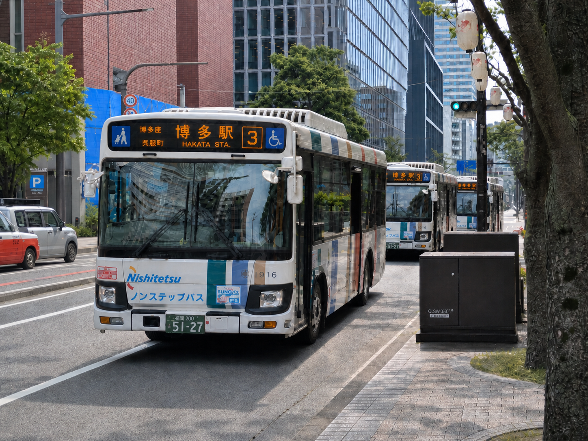
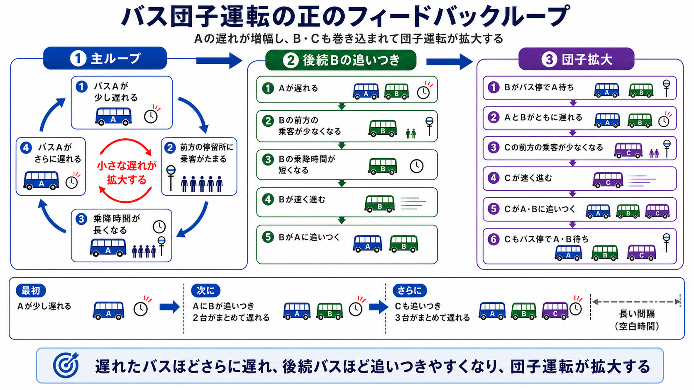
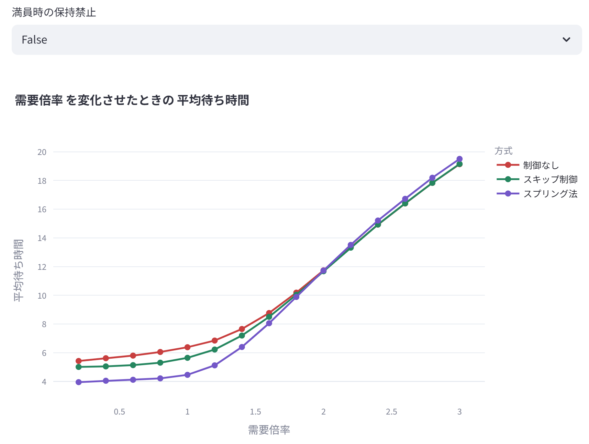
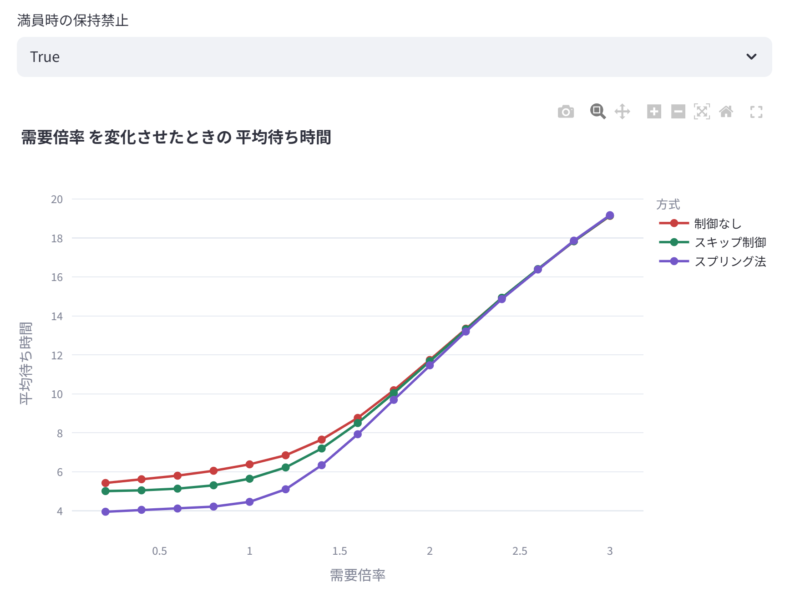
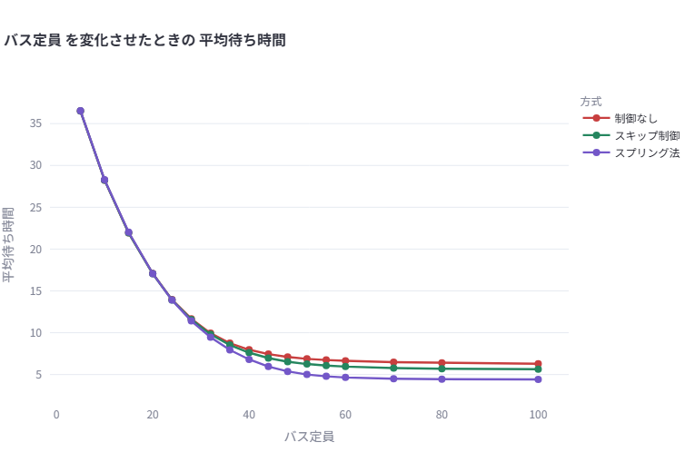
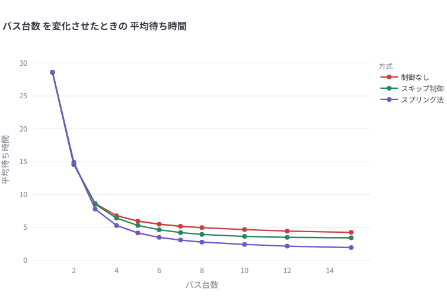
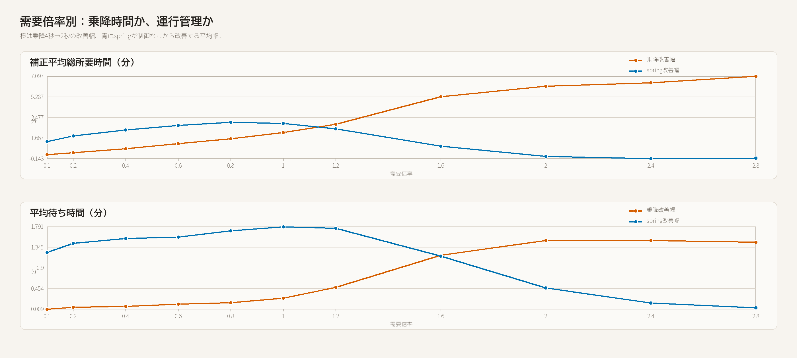
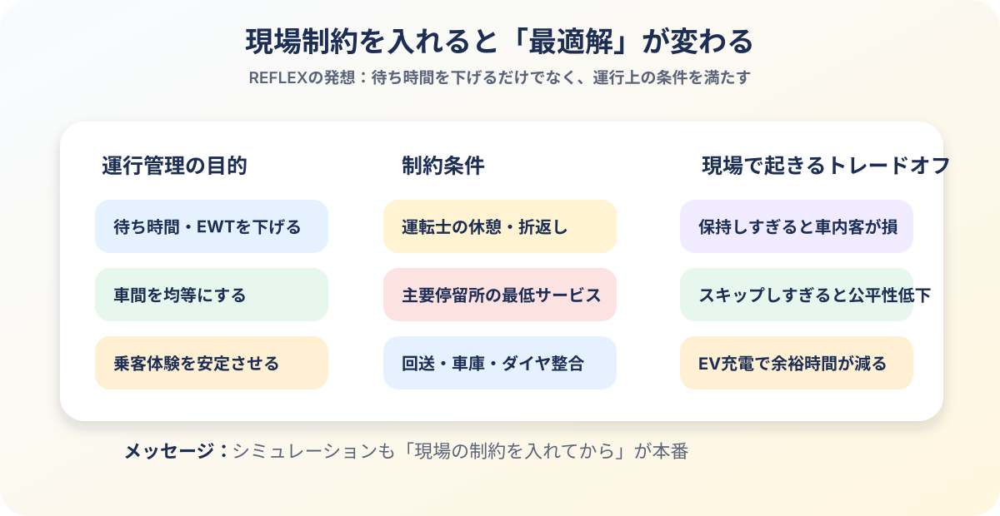
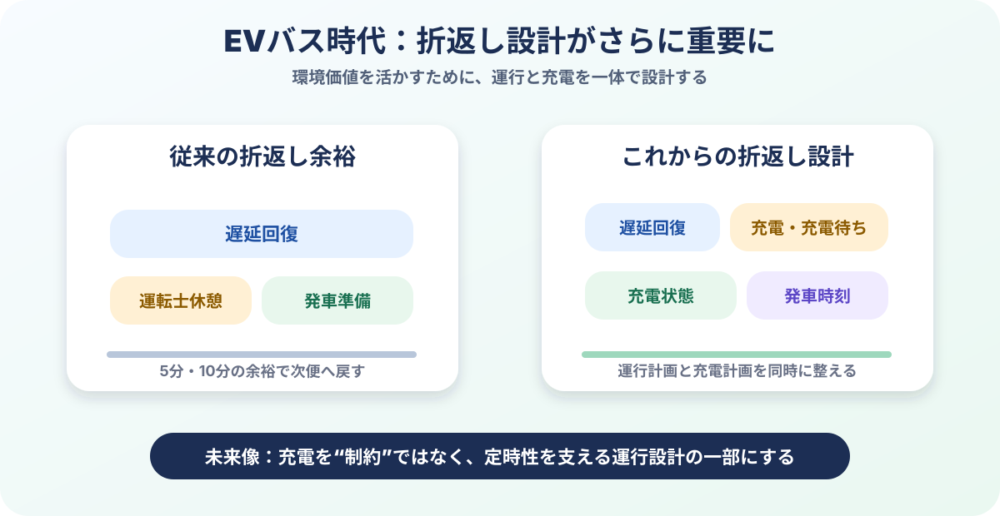
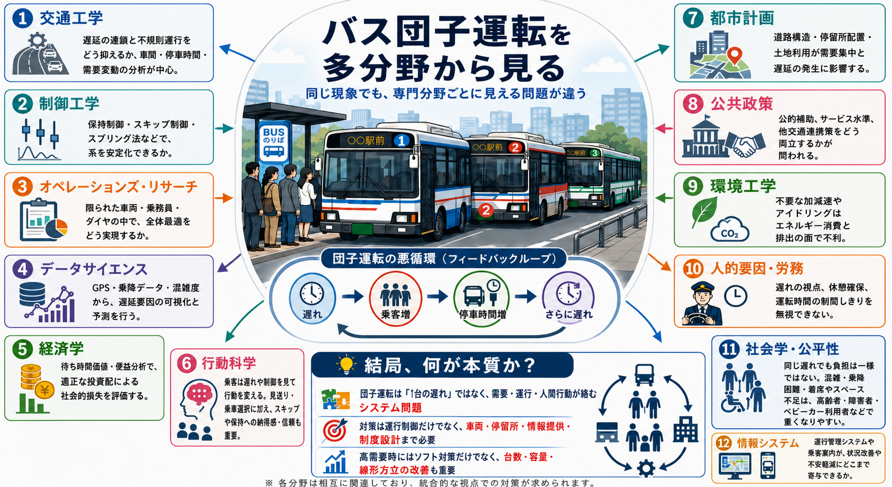

だんご
バス3台
団子運転を、シミュレーション・現場制約・複数分野の視点から考える
「3台連続」は、なぜ起きて、どう抑えるのか？
身近な現象
やっと来たと思ったら、後ろにもバス。まずは団子運転の構造を直感でつかむ。
シミュレーション
制御なし・スキップ制御・スプリング法を比べ、効く条件と失敗条件を見る。
現場制約と発展
満車、乗降時間、REFLEX、EV充電、乗客行動まで含めて考える。
やっと来たと思ったら、
後ろにもバス
バスが等間隔で来るはずなのに、前後の間隔が崩れて複数台が固まる。
乗客から見ると「長く待つ時間」と「一気に来る時間」が生まれる。しかも先頭は混み、後続は比較的空くことがある。


寺田寅彦は、
すでに「混雑の波」を見ていた
1922年の随筆『電車の混雑について』では、混雑した電車と空いた電車が周期的に現れること、そして乗客がそれを観察して行動を変え得ることが描かれている。
今回のテーマとのつながり
混雑はランダムではなく、波として現れることがある。
人の行動は、混雑の波を強めることも弱めることもある。
だから団子運転は、車両だけでなく乗客も含むシステム問題として見る必要がある。
出典：寺田寅彦『電車の混雑について』初出「思想」1922年9月。
自作シミュレーターで、団子運転を再現する
ブラウザ上で動くHTML/JavaScriptシミュレーターを作り、条件を変えながら制御の効き方を比較した。
実演で見せるポイント
バス同士の間隔、待ち時間、混雑率、満車、スキップ、保持時間がどう変化するかを、画面で見せる。
3つの運行方式を比べる
普通に走る
乱れが入ると、団子化の正のフィードバックがそのまま進む。
後続に任せる
後続が近いとき、先行バスが一部の乗車扱いを抑え、遅れ回復を狙う。
車間を整える
バス間を仮想バネでつなぐ発想。前後の間隔を見て保持を判断する。
スプリング法は有望。でも、ある条件で逆効果が見えた
シミュレーションで、高需要時にスプリング制御が思ったほど効かない、または悪化するケースを確認。
AIと一緒に原因を分解。車間だけを見て満車バスを保持すると、車内客と後続に副作用が出るのでは？と仮説化。
車両容量を考慮したリアルタイム保持制御の研究にたどり着く。問題意識が先行研究とつながった。
満員時の保持禁止を入れて再実験。高需要時の逆効果を抑えられる方向が見えた。
ポイント：制御ロジックは「車間」だけでなく、「そのバスを今止める意味があるか」まで見ないと危ない。
満員時の保持禁止：なし / あり
保持禁止なし

高需要側で、保持の副作用が出やすい。
保持禁止あり

満車に近いバスを無理に止めないことで、副作用を抑える。
学び：同じスプリング法でも、容量制約を入れるだけで振る舞いが変わる。現実の制約を入れた制御設計が重要。
高需要では、台数・容量の増加が効きやすい
バス定員を増やす

バス台数を増やす

運行管理だけに注目すると、供給不足そのものを見落とす。容量・台数が足りない条件では、物理的な供給増が強く効く。

乗降時間の短縮は
強力な打ち手
橙は「乗降4秒→2秒」の改善幅、青は「スプリング制御による改善幅」。
例：多扉化、乗降分離、タッチ決済の詰まり低減、停留所での整列・案内など。
乗客の行動も
制御の一部になる
今来たバスが混んでいて、後続が近くて空いているとわかれば、一部の乗客は自発的に次を待つかもしれない。
寺田寅彦が見た「混雑の波」と、現代のリアルタイム混雑情報はここでつながる。
実装イメージ
| 条件 | 乗客の選択 |
|---|---|
| 先行バスが混雑 | 快適性重視の人は次便を選ぶ |
| 後続が1停留所以内 | 見送り抵抗が下がる |
| 混雑差が大きい | 乗客が自然に分散する |

NEC REFLEXが
示す視点
REFLEXは、バスの数珠つなぎ現象を軽減するために、停留所での保持や停車義務免除などを含む動的な調整を考える。
- 便間隔・乗り継ぎ間隔などの運行条件
- 保持時間、折返し、運転士休憩
- 現場制約を満たす範囲での最適化
参考：NEC Tech Report「REFLEXによるバス運行の動的最適化」。

EVバス時代は、
折返し設計がもっと重要になる
国土交通省の電動バス導入ガイドラインでは、導入主体・路線・運行形態ごとに、必要な車両性能や充電設備が異なるとされている。
EV化は環境面で重要な前進。だからこそ、遅延回復余裕と充電余裕を競合させない運行設計が価値を持つ。
参考：国土交通省「電動バス導入ガイドライン」。

今回の探求から
見えたこと
団子運転は、小さな遅れが増幅するシステム現象。
スプリング法は有望だが、満車・車内客・停留所容量を無視すると逆効果もある。
高需要では、台数・容量・乗降時間短縮などハード面の改善が効きやすい。
バス団子運転は、交通工学・制御・OR・行動科学・環境・現場運用が絡む総合問題。
発表で触れた主な資料
- 寺田寅彦『電車の混雑について』青空文庫。初出「思想」1922年9月。
- NEC Tech Report「REFLEXによるバス運行の動的最適化」。
- Gkiotsalitis, K., & Van Berkum, E. C. “An analytic solution for real-time bus holding subject to vehicle capacity limits.” Transportation Research Part C.
- 国土交通省「電動バス導入ガイドライン」。
- リアルタイム混雑情報、バス保持制御、EVバス充電計画に関する交通研究。